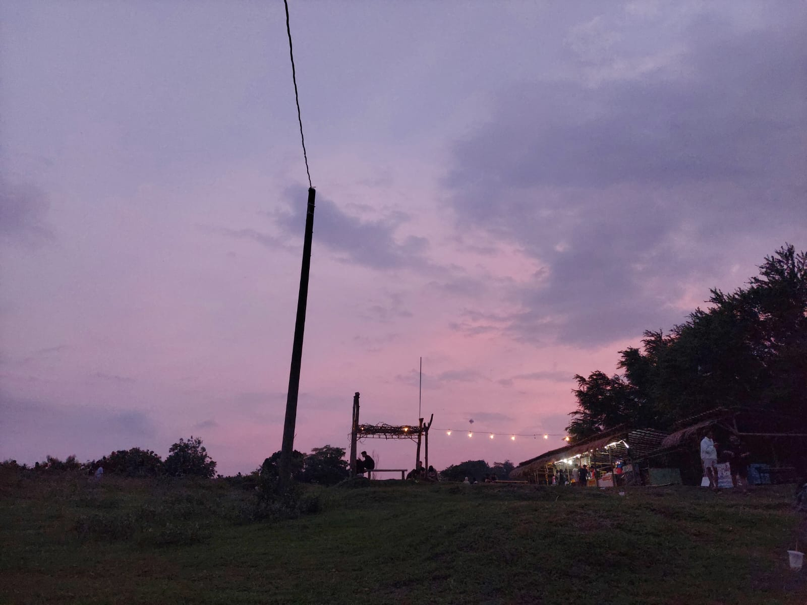
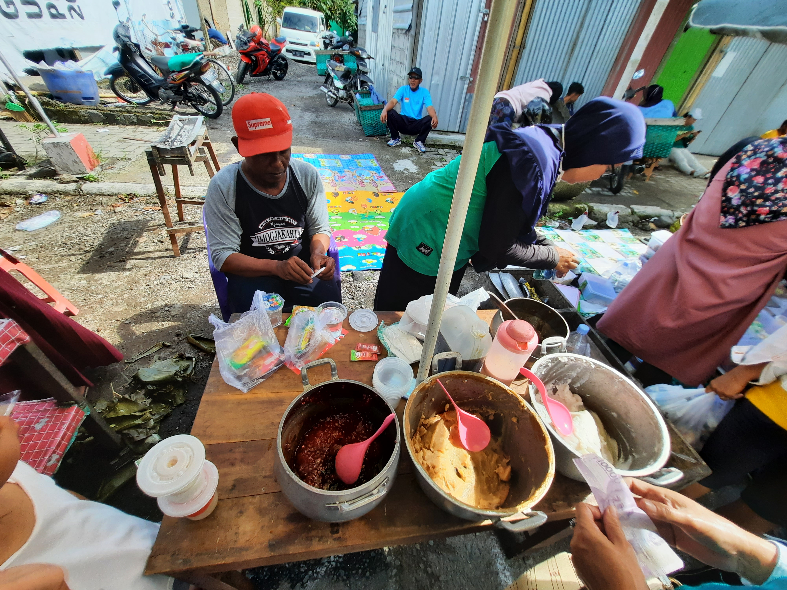
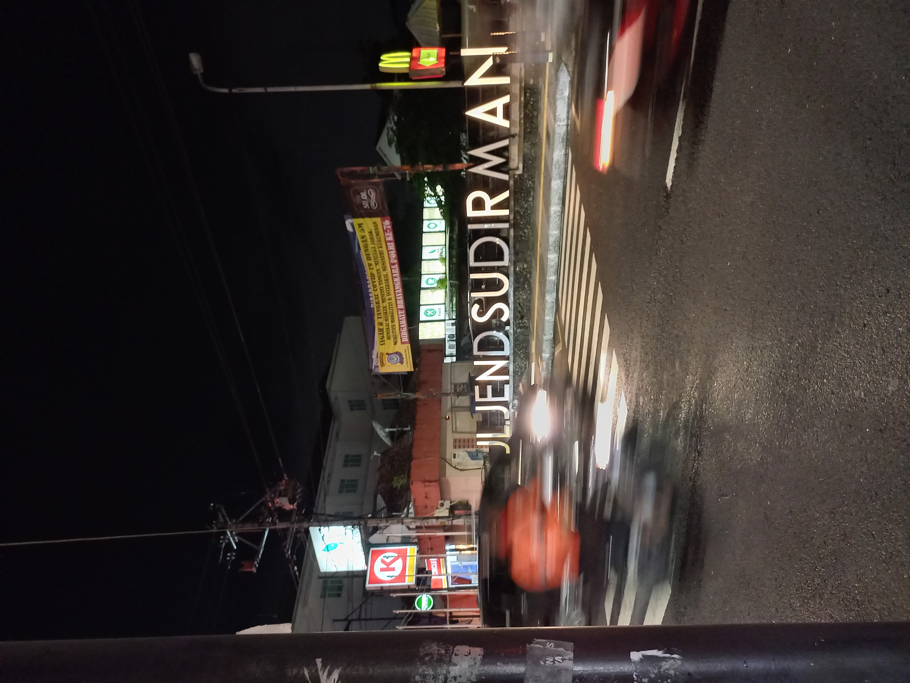

Nature

This moment portrays the beauty of the sky as the sun sets over a hill, creating a mesmerizing view. The sky is filled with intense shades of purple, providing a magical and romantic ambiance. This sunset moment creates a tranquil and captivating atmosphere, offering an opportunity for reflection and enjoyment of the beauty of nature. The peaceful ambiance and the marvel of nature emanating from the purple sky make this moment an unforgettable experience.
Social

The photo features a woman selling jenang (a traditional Indonesian food) in the Car Free Day area. The woman is seen busy and dedicated in serving customers. The vibrant and lively atmosphere of Car Free Day serves as the background. This moment captures the everyday life in the area, where people socialize and enjoy various interesting activities. The photo also depicts the cultural and culinary diversity of the region, with jenang being the focal point. The composition of the photo evokes emotions and showcases the colorful everyday life in Car Free Day.
Street

The photo captures the unique beauty and vibrant nightlife of Jalan Jenderal Sudirman in Yogyakarta. With its well-composed frame and dramatic lighting, the photo presents a captivating atmosphere that evokes emotions, showcasing the energetic and enchanting night scene in this city.